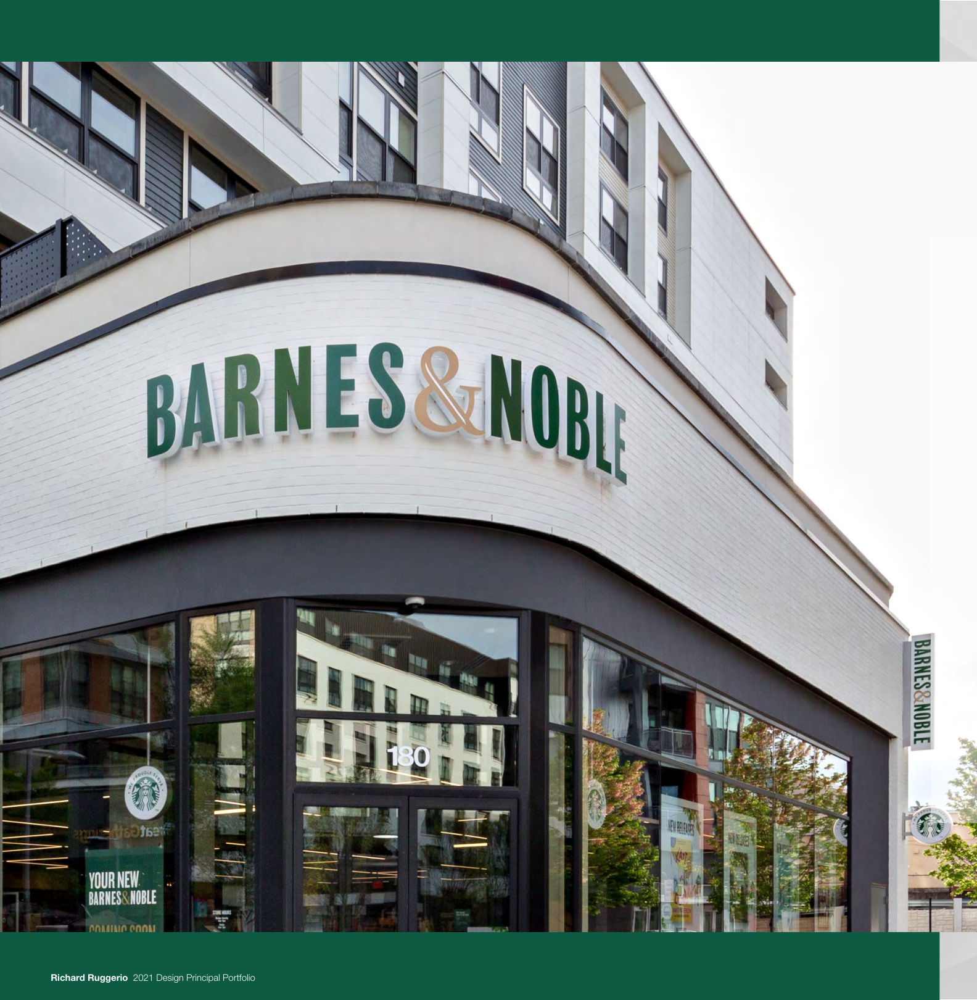
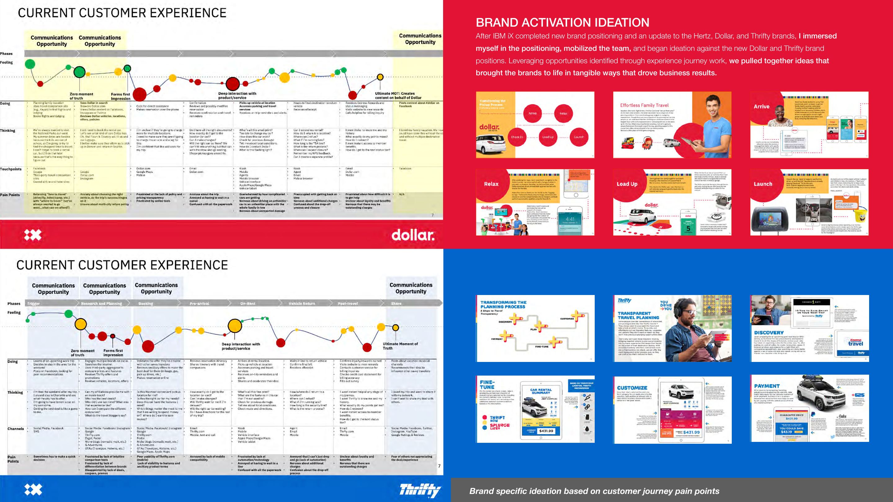
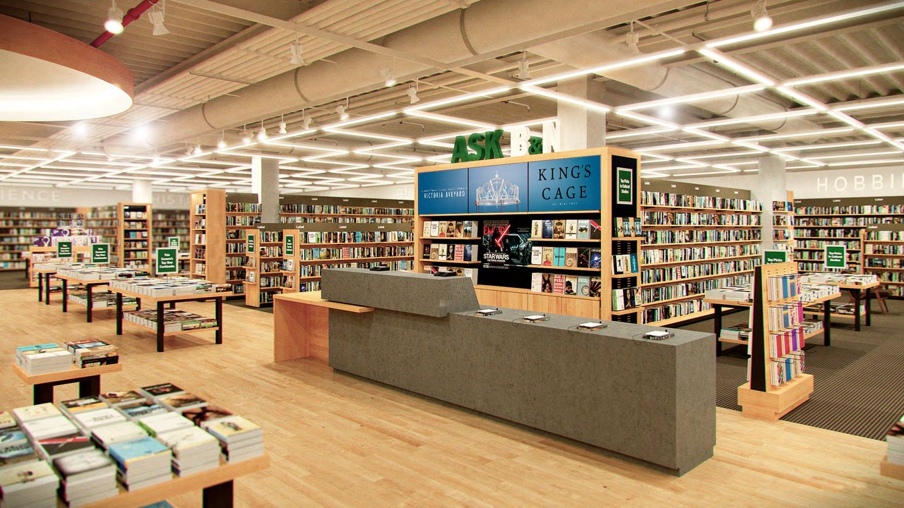

Featured
Work

Customer Experience & Delivery Innovation
Led a two-year engagement as overall creative and UX lead across the full Barnes & Noble digital ecosystem. Conducted brand content audits, archetype and competitive research, and developed an omni-channel strategy that drove incremental growth in the digital channel for the 2015 holiday season.

Insights-Driven Mobile Innovation
Designed the first mobile payment experience to beat McDonald's, Burger King, Taco Bell, and others to mobile payments. Built a small team that designed and tested a mobile payment prototype over four weeks—implemented, deemed successful, and the feature was added to the application.

Hertz / Dollar / Thrifty Digital Transformation
Led a cross-organizational design and UX team through the complete redesign of Hertz.com on Adobe AEM—serving as the shared experience and code base for three brands. Established an initial design system, migrated the team from Sketch & InVision to Adobe XD, and defined the collaborative process.

In-Store Video Innovation & Motion Design
As B&N redesigned its physical retail concept—adding reading areas, a full-service restaurant, and a bar—I led a team of three animators to create motion-design book art for wall monitors. Leveraging cover art to tell dynamic visual stories, the work fueled joy of discovery.